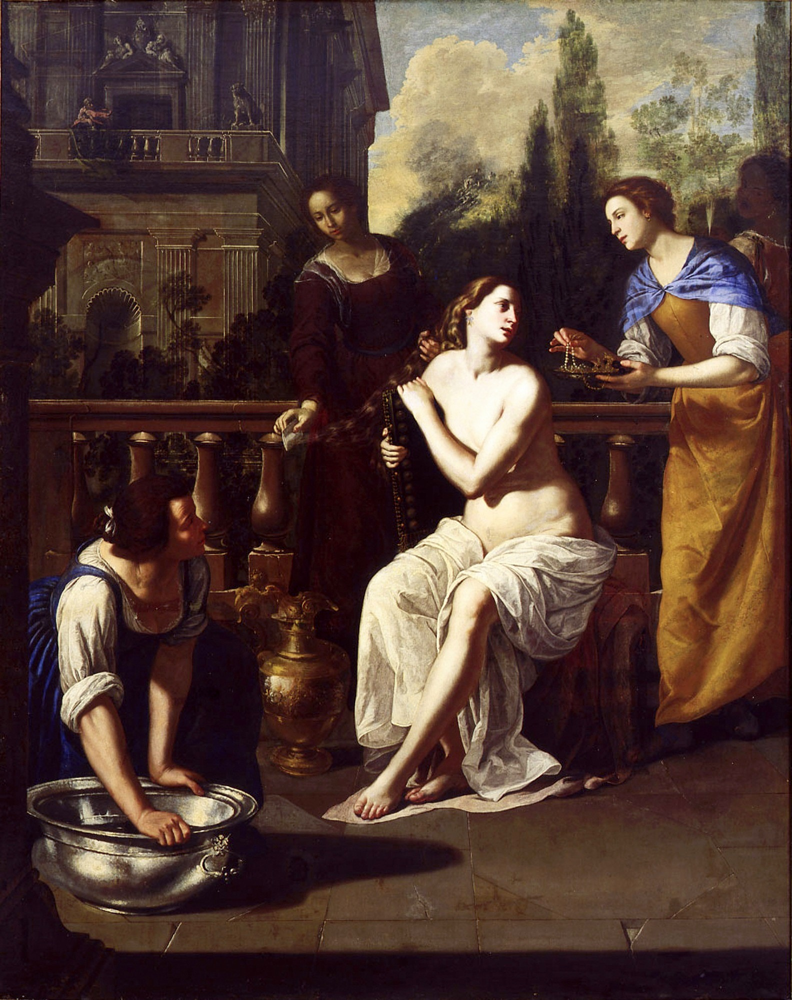

Psalm 51 — The Mister Translation

⚠ Look at the proportions. Psalm 51 is twenty-one verses in the first person, and it never once names Bathsheba or Uriah. Only the superscription does. The psalm is entirely David’s voice, his guilt, his heart, his rescue.
Gentileschi reverses that exactly. The woman fills the canvas, attended and particular, caught mid-glance. David is the small shadowed figure on the balcony at the upper left — almost a detail of the architecture, easy to miss on first look. The painting hands the space to the person the psalm does not mention, and puts the man who wrote it in the corner, watching. That is 2 Samuel 11:2 in one image: David saw a woman bathing.
Only the second woman painter in this library, after Lavinia Fontana. Artemisia Gentileschi was the first woman admitted to the Accademia delle Arti del Disegno in Florence, and she returned repeatedly to subjects of women being watched, judged or coerced — Susanna, Judith, Lucretia. ⚠ A restrained note on the biography, because it is a matter of court record and it is usually mentioned: she was raped by the painter Agostino Tassi in 1611 and gave evidence at his trial under torture. It is fair to say the subject was not abstract to her; it would be crass to reduce the paintings to it.
⚠ The architecture is generally credited to Viviano Codazzi, a specialist in painted buildings who collaborated with her; the figures are hers.
{kind=link}
Translator’s Notes
1–2 — ⚠ Why the verse numbers here are two ahead of your Bible
In the Hebrew, the superscription is the text: “For the director. A psalm. Of David” is verse 1, and “when Nathan the prophet came to him” is verse 2. English Bibles print both as an unnumbered heading and start counting at “Be gracious to me.” So every verse on this page is numbered two higher than in an English Bible: the famous “create in me a clean heart” is Psalm 51:10 in English and verse 12 here. This page follows the Hebrew because it prints the Hebrew; the note headings below give both numbers.
⚠ And the superscription is a claim, not a title. It attaches the psalm to 2 Samuel 11–12 — David, Bathsheba, and the killing of her husband Uriah to cover it. Whether the psalm was written for that occasion or attached to it later is not something the text settles, and the superscriptions are widely held to be editorial. But the attachment is ancient, it is part of the received text, and it is what makes verse 6 so difficult.
3–6 (English 1–4) — “Against you only have I sinned” — what about Uriah?
Three words for wrongdoing open the psalm and they are not synonyms. Pesha (v3) is rebellion, a breach of relationship — the word used of a vassal revolting. Avon (v4) is guilt or twistedness, the crookedness itself. Chatta’t (v4) is missing — the ordinary word for an arrow falling short. The psalm asks for a different verb against each: wipe out, wash, cleanse.
Chesed (v3) is the covenant word this library has met often: not kindness in general but loyalty owed within a relationship. And mecheh, “wipe out,” is what you do to writing — erasing an entry, not forgiving a feeling.
⚠ Now verse 6, which is the hardest sentence in the psalm. “Against you, you alone, I have sinned.” If the superscription is right, that is said by a man who committed adultery and had a soldier killed. Against you alone? The usual defences — that all sin is ultimately against God, or that a king is answerable to no human court — are real readings and neither is in the text. This library prints the sentence as it stands and notes the problem rather than resolving it. Paul quotes the second half of the verse at Romans 3:4, and it is awkward there too.
7 (English 5) — “In sin my mother conceived me”: the KJV margin says “warm me”
The verse most often used to prove a doctrine, and the verb is stranger than the doctrine. Yechemathni is from yacham, to be hot — used in Genesis 30 and 31 of animals in heat, conceiving. KJV prints “did my mother conceive me” and then admits it in the margin: “conceive: Heb. warm me.” That is the sixteenth place in this library where an older version’s margin is more candid than its own text.
⚠ What the verse claims is genuinely disputed and the Hebrew does not settle it. Read one way it is a statement about the human condition from conception. Read another it is hyperbole of the kind the Psalms use constantly — I have been like this as long as I have existed — and the accusation falls on the speaker, not on his mother or on conception. Note that the psalm does not go on to draw a doctrine from it; the next verse turns immediately to what God delights in.
9–11 (English 7–9) — Hyssop, and a verb that means “un-sin”
Techat’eni is the intensive form of chata, to sin — and in that form the verb means the opposite: to remove sin, de-sin, purge it out. English has no single word for it; the text above says “purge the sin out of me.” The same form is used of purifying the altar in Exodus 29:36. KJV renders it “purge me with hyssop”, which catches the removal sense; NWT spells it out as “may you purify me from sin with hyssop”, and RV gives the plain «purifícame con hisopo».
Hyssop is not decorative. It is the sprig used to daub the blood on the doorposts at Passover (Exodus 12:22) and in the rites for cleansing a leper and a corpse-defiled house (Leviticus 14, now on these pages; Numbers 19). ⚠ So a psalm that will shortly say God does not want sacrifice opens by asking for the ritual instrument of purification. The psalm holds both and does not explain itself.
Verse 10’s “let the bones you crushed be glad” is the psalm’s most physical line and every version keeps it. It is worth noticing who did the crushing.
12 (English 51:10) — “Create in me a clean heart”: bara, the verb only God takes
This is the line the psalm is known for, and the verb is the point. Bara is the verb of Genesis 1:1 — and across the whole Hebrew Bible it takes only God as its subject. No human ever baras anything. It is not the ordinary word for making or shaping (that is asah or yatsar); it is reserved for what only God does.
So the request is not “improve me” or “help me do better.” It asks for the same act as the first sentence of the Bible, performed on a heart. The whole shelf keeps the verb — KJV “Create in me a clean heart,” RV «Crea en mí», NWT “Create in me even a pure heart” — which is right, and the force of it depends on knowing how restricted the word is.
Nakhon, the spirit asked for, is steady or firmly set rather than morally “right”; KJV prints “a right spirit” and margins the truth again: “right: or, constant.” And verse 13’s “do not take your holy spirit from me” is one of only three places in the Hebrew Bible with the phrase ruach qodshecha (also Isaiah 63:10–11). The whole shelf keeps it as a request not to have it removed — KJV “take not thy holy spirit from me”, NWT “your holy spirit O do not take away from me”, RV «no quites de mí tu santo espíritu».
15–17 (English 13–15) — “Deliver me from bloodguilt”: the Hebrew says “bloods”
Damim (v16) is blood in the plural, and in Hebrew that plural specifically means bloodshed or the guilt of it — blood that has been spilled and is owed for. If the superscription is right, the word is doing precise work: Uriah.
Verse 15 is the turn the psalm has been building toward and it is easy to miss: having asked to be cleaned, the speaker says what he will do with it — teach rebels your ways. The word is posh’im, the same root as the pesha he opened by confessing.
18–19 (English 16–17) — “You do not want sacrifice”
As flat a statement as the Hebrew Bible makes: you do not want sacrifice, or I would give it. Not that sacrifice is insufficient — that God does not want it. The psalm offers instead a broken spirit, and the word for broken, shavar, is what happens to pottery and bones. It is the same root as the crushed bones of verse 10. The versions do not soften the first half: KJV “thou desirest not sacrifice”, NWT “you do not take delight in sacrifice”, RV «no quieres tú sacrificio» — and KJV margins the awkward next clause too (“else would I give it”: or, that I should).
⚠ Prophets say this too (1 Samuel 15:22, Hosea 6:6, Isaiah 1:11–17, Amos 5:21–24), so it is not an isolated outburst. What is unusual is what happens next.
20–21 (English 18–19) — ⚠ And then the psalm asks for sacrifices
Two verses after saying God does not want sacrifice, the psalm asks him to build the walls of Jerusalem and promises that then he will delight in sacrifices of righteousness, burnt offering and whole offering, with bulls going up on the altar. Zevach appears four times in the psalm, on both sides of the reversal — and every version prints both halves without comment: KJV “then shalt thou be pleased with the sacrifices of righteousness”, NWT “in that case you will be delighted with sacrifices of righteousness”, RV «entonces te agradarán los sacrificios de justicia».
⚠ The plainest reading is that these last two verses are a later addition — by someone in or after the exile, when the walls were down and the altar unusable, who found verse 18 intolerable as a last word and wrote a temple back onto the end. The shift from an individual voice to the fate of a city, and the sudden change of subject, both point that way. It is not provable.
This library prints all twenty-one verses and neither harmonises them nor deletes the ending. The seam is one of the clearest in the Psalter, and a reader is better served seeing it than being handed a psalm that has been made consistent.
Patterns worth carrying forward.
⚠ Verse numbers here are two ahead of your Bible. In the Hebrew the superscription is the text — verse 1 is “for the director,” verse 2 is “when Nathan the prophet came to him” — while English Bibles print both as an unnumbered heading. So “create in me a clean heart” is Psalm 51:10 in English and verse 12 here. Every note heading gives both numbers.
⚠ The one thing to carry out of this psalm. The verb at verse 12 is bara — the verb of Genesis 1:1, and across the entire Hebrew Bible it takes only God as its subject. No human ever baras anything, and it is not the ordinary word for making or shaping. So “create in me a clean heart” is not a request to be improved: it asks for the act of the first sentence of the Bible, performed on a heart. Every version keeps the verb; the force depends on knowing how restricted it is.
⚠ And the psalm contradicts itself in the open. Verse 18: you do not want sacrifice, or I would give it. Verse 21, three lines later: then you will delight in sacrifices of righteousness… then bulls will go up on your altar. Zevach appears four times, on both sides of the reversal. The plainest reading is that the last two verses are a later addition — from someone in or after the exile, when the walls were down and the altar unusable, who could not leave verse 18 as the last word. It is not provable, and this library prints all twenty-one verses without harmonising them or deleting the ending. The seam is one of the clearest in the Psalter.
⚠ The hardest sentence. “Against you, you alone, I have sinned” (v6) — said, if the superscription is right, by a man who committed adultery and had a soldier killed to cover it. The usual defences are real readings and neither is in the text. Printed as it stands.
Three words for wrong, and they are not synonyms. Pesha is rebellion, a breach of relationship; avon is guilt, the crookedness itself; chatta’t is missing, an arrow falling short. The psalm asks a different verb against each: wipe out, wash, cleanse — and wipe out is what you do to writing, erasing an entry rather than forgiving a feeling.
Renderings chosen. “Purge the sin out of me” at v9, because the intensive form of chata, to sin, means to remove sin — English has no single word for it. Bloodguilt at v16, where the Hebrew is damim, blood in the plural, which specifically means blood that has been spilled and is owed for. And a steady spirit at v12 for nakhon, which is firmly-set rather than morally “right.”
⚠ Where the KJV’s margin is more candid than its text — the sixteenth such case in this library. At verse 7 it prints “did my mother conceive me” and admits underneath: “Heb. warm me” — the verb is yacham, to be hot, used in Genesis of animals in heat. And at verse 12 it prints “a right spirit” with “or, constant.”
Hyssop is not decorative. It is the sprig used to daub blood on the doorposts at Passover and in the rites for cleansing a leper and a corpse-defiled house. A psalm that will shortly say God does not want sacrifice opens by asking for the ritual instrument of purification, and does not explain itself.
⚠ A note on order: the Psalms stand on these pages at 1, 23, 51, 91 and 139 — chosen by search demand rather than in sequence. The navigation above runs between the psalms this library has actually translated, so from here it goes on to Psalm 91. The sequential thread is unchanged and still open at Psalm 2.